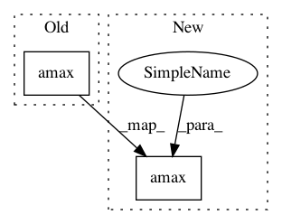

557fea369f48500b30bda8d2f1572ac4c4ebad55,secuml/core/clustering/algos/gaussian_mixture.py,GaussianMixture,get_predicted_proba,#GaussianMixture#,42
Before Change
def get_predicted_proba(self):
all_probas = self.pipeline.predict_proba(
self.instances.features.get_values())
predicted_proba = np.amax(all_probas, axis=1)
return predicted_proba
def get_all_proba(self):
all_probas = self.pipeline.predict_proba(
After Change
return self.pipeline.predict(self.instances.features.get_values())
def get_predicted_proba(self):
all_probas = self.get_all_proba()
return np.amax(all_probas, axis=1)
def get_all_proba(self):
features = self.instances.features.get_values()
return self.pipeline.predict_proba(features)
In pattern: SUPERPATTERN
Frequency: 3
Non-data size: 2
Instances
Project Name: ANSSI-FR/SecuML
Commit Name: 557fea369f48500b30bda8d2f1572ac4c4ebad55
Time: 2019-09-03
Author: anael.beaugnon@ssi.gouv.fr
File Name: secuml/core/clustering/algos/gaussian_mixture.py
Class Name: GaussianMixture
Method Name: get_predicted_proba
Project Name: kundajelab/dragonn
Commit Name: 2e19f878707e04da7d9a4ccbe0cceb515b433124
Time: 2019-04-30
Author: annashcherbina@gmail.com
File Name: dragonn/vis/__init__.py
Class Name:
Method Name: plot_ism
Project Name: fgnt/pb_bss
Commit Name: d1fe778df65191c3a19e43b2bc6bc705c9746a5d
Time: 2019-08-13
Author: cbj@mail.uni-paderborn.de
File Name: pb_bss/distribution/complex_angular_central_gaussian.py
Class Name: ComplexAngularCentralGaussian
Method Name: from_covariance